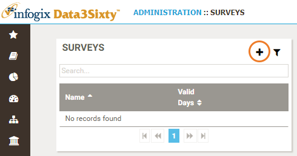
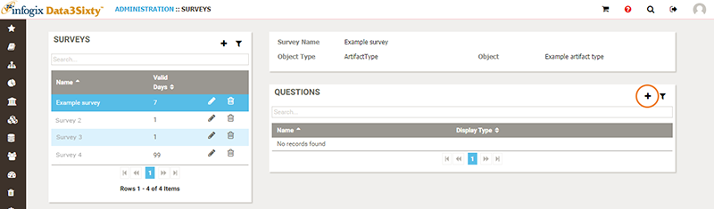
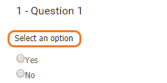
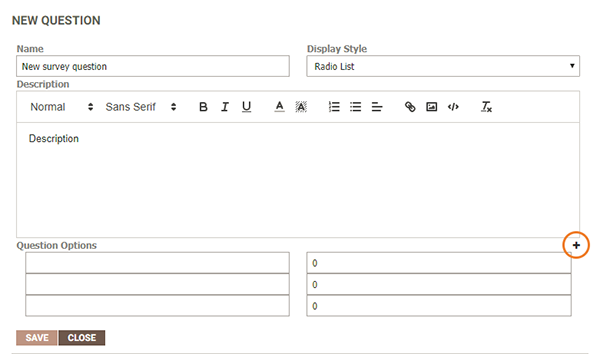

|
|
Creating surveys
As an Administrator, you can create a survey and apply it to a specific artifact, model or rule. Then, when users are viewing an item for which there is a related survey, they will be able to click a link to complete the survey questions, see Responding to a survey.
- From the Administration menu on the left of the screen, select Metamodel > Surveys.
- Click the Add button in the top right corner of the Surveys panel:

- Set up the metadata for the survey by completing the fields in the New Survey panel:
- Name - Type a name for the survey. The name will be displayed to users in the survey link on the artifact detail page.
- Assign Survey To - Select the Artifact, Model or Rule to which you want to apply the survey. You can only select one artifact type.
- # Days before user can retake - Enter the number of days before a user who has already taken the survey can retake it. For example, if you want to allow users to retake the survey on a daily basis, enter
1, or if you want to create a survey that is taken annually, enter365.
- Create the questions for your survey:
- Highlight the survey in the Surveys panel and click the Add icon in the top right corner of the Questions panel:

- Complete the fields in the New Question panel:
- Name - Type the question.
- Display Style - Choose from Radio List or Check List. If you select Radio List, the user will only be able to select one of the specified options, for example:

If you select Check List, the user will be able to select multiple options, for example:

- Description - If needed, add context to the question with a brief description. The description will be included with the question, for example:

Question Options - Enter the response values from which the user will be able to select. To add additional response options, click the Add button to the right of the Question Options fields:

- When you have finished creating your question, click Save. Repeat steps a and b to add further questions as necessary.
The survey response information is stored in the database and can be reported on via dashboards. You can work with your Infogix representative to create dashboards using survey results.